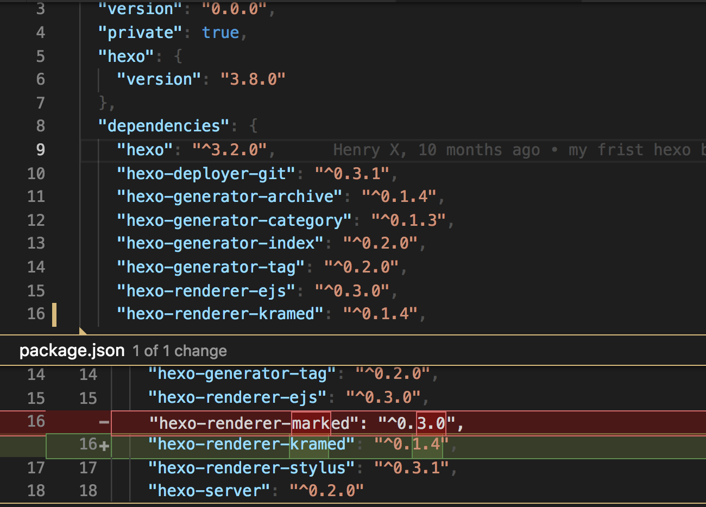
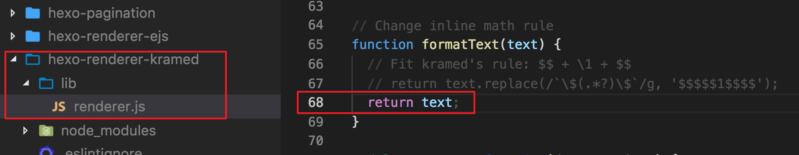
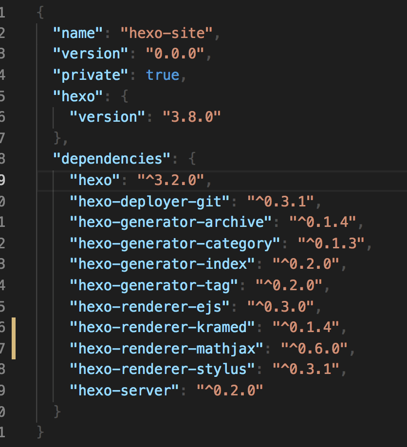
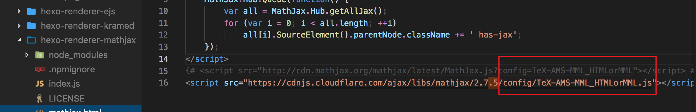
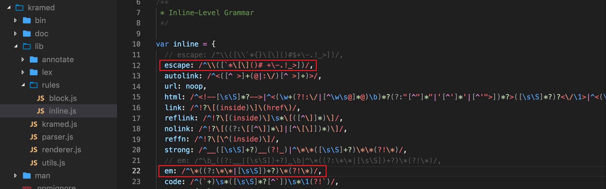
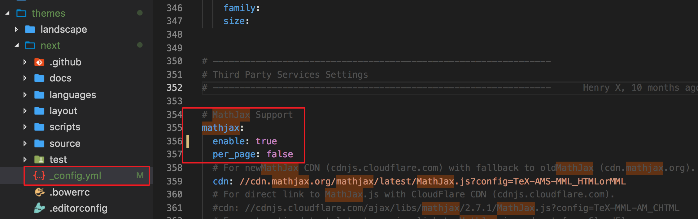
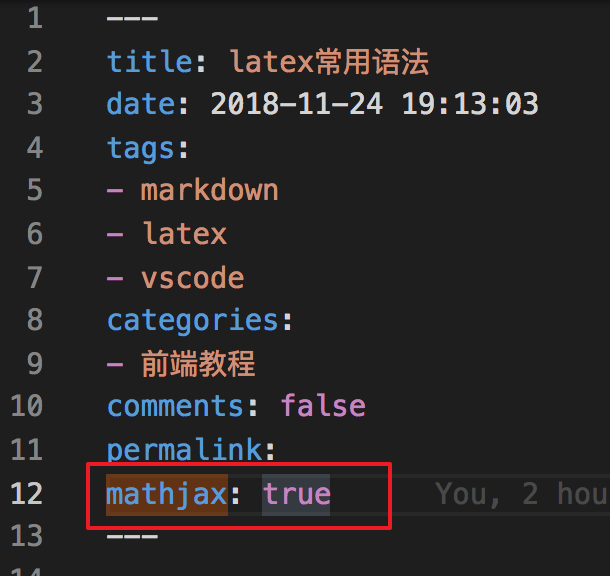

hexo中使用LaTex公式的开启方法
如果你的hexo 主题就是next的那么就不需要下面的3, 4步(因为hexo有mathjax的配置), 只需要1, 2, 5, 6, 7, 8
第2步和第8步是注意点
第一步: 安装Kramed
更换hexo的markdown渲染引擎为hexo-renderer-kramed, 用来支持mathjax公式输出
1 | npm uninstall hexo-renderer-marked --save |
在hexo的package.json中显示如下

第二步: 更改kramed文件配置(重点, 不然实现不了行间)
打开文件/node_modules/hexo-renderer-kramed/lib/renderer.js, 作如下更改:
1 | // Change inline math rule |

第三步: 停止使用hexo-math 并安装mathjax包
虽然在package.json中看不到hexo-math , 但还是要卸载
1 | npm uninstall hexo-math --save |

第四步: 更新 Mathjax 的 配置文件
打开/node_modules/hexo-renderer-mathjax/mathjax.html
如图所示更改<script>为：只是改域名, 后面的config别变
1 | <script src="https://cdnjs.cloudflare.com/ajax/libs/mathjax/2.7.5/config/TeX-AMS-MML_HTMLorMML.js"></script> |

第五步: 更改默认转义规则
因为LaTeX与markdown语法有语义冲突，所以 hexo 默认的转义规则会将一些字符进行转义，所以我们需要对默认的规则进行修改.
打开/node_modules\kramed\lib\rules\inline.js
改两个rule
1 | escape: /^\\([`*\[\]()#$+\-.!_>])/, |

第六步: 开启mathjax
打开/themes/next主题目录下的_config.yml文件
不同的主题不同的配置文件不同, 找你安装的主题是啥
我们需要在_config.yml文件 中开启 Mathjax,(不同的主题配置方法略微有区别)

第七步: 在new 一个文章的时候加上mathjax: true
